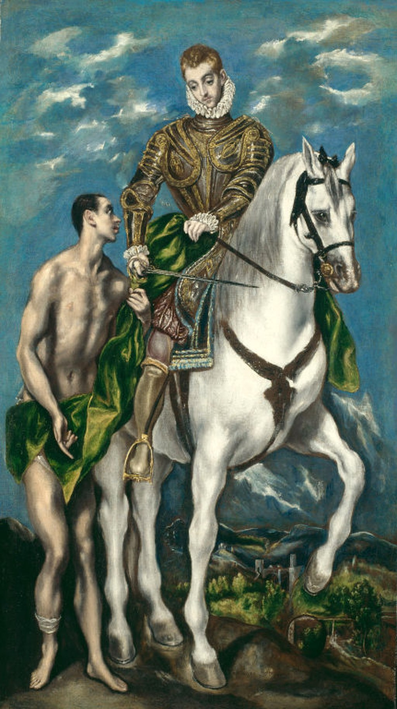

<head>
<meta charset="UTF-8" />
<meta name="keywords" content="drawing, painting" />
<meta name="description" content="drawings by Sunjy" />
<title>Sunjy</title>
<link rel="shortcut icon" type="image/x-icon" href="../../mImages/mCommon/favicon.ico" media="screen" />
<link rel="stylesheet" type="text/css" href="../../mCsses/mCommon/mCssA.css" />
<link rel="stylesheet" type="text/css" href="../../mCsses/mCommon/mCssB.css" />
<link rel="stylesheet" type="text/css" href="../../mCsses/mCommon/mCssC.css" />
<link rel="stylesheet" type="text/css" href="../../mCsses/mCommon/mCssD.css" />
<link rel="stylesheet" type="text/css" href="../../mCsses/mContent/mCssA.css" />
<link rel="stylesheet" type="text/css" href="../../mCsses/mContent/mCssB.css" />
<link rel="stylesheet" type="text/css" href="../../mCsses/mContent/mCssC.css" />
<link rel="stylesheet" type="text/css" href="../../mCsses/mContent/mCssD.css" />
</head>
<script type="text/javascript" src="../../mScripts/mContent/mContentAA.js" /></script>
<script type="text/javascript" src="../../mScripts/mContent/mContentAB.js" /></script>
<script type="text/javascript" src="../../mScripts/mContent/mContentAC.js" /></script>
<script type="text/javascript" src="../../mScripts/mContent/mContentAD.js" /></script>
<script type="text/javascript"></script> 
<script type="text/javascript">
document.write('<div class="mImgAbsolute"></div>');
/*
document.write('<p class="mFontSizeBColor" />From a white paper...</p>');
document.write('<table class="center"><tr><td>');
document.write('');
document.write('</td></tr></table>');
*/
</script>


<script type="text/javascript">
document.write('<p class="mFontSizeBColor" />Saint Martin and the Beggar </p>');
document.write('<p class="mFontSizeSColor" />“Saint Martin and the Beggar” by El Greco depicts the best-known story on the life of the Christian Saint Martin of Tours. He was in the Roman cavalry, who used his sword to cut his cloak in two, to give half to a beggar who was clad only in rags in the depth of winter.<br><br>Saint Martin of Tours (336 – 397) was the third bishop of Tours after he had served in the Roman cavalry in Gaul and converted to Christianity at a young age.<br><br>This smaller version by El Greco is in the collection of the Art Institute of Chicago; a larger version is in the collection of The National Gallery of Art, Washington, DC.<br><br>The worship of Martin was popular in the Middle Ages, especially in France, where many place names commemorate Martin. <br><br>St. Martin’s popularity in France can also be attributed to his adoption by successive royal houses of France. Martin was most generally portrayed on horseback, dividing his cloak with the beggar.<br><br>From the 4th century to the late Middle Ages, much of Western Europe engaged in a period of fasting beginning on the day after St. Martin’s Day, November 11.<br><br>This fast period lasted 40 days, and was, therefore, called “the forty days of St. Martin.” At St. Martin’s eve and on the feast day, people ate and drank very heartily for the last time before they started to fast.<br><br>This fasting time was later called “Advent” by the Church and was considered a time for spiritual preparation for Christmas.<br><br>Martin of Tours<br><br>Martin was born in AD 316 or 336 in what is now, Hungary, to a father who was a senior officer or tribune in the Imperial Horse Guard.<br><br>Martin grew up in northern Italy, As the son of a veteran officer, Martin at fifteen was required to join the Roman cavalry.<br><br>The most famous legend concerning Martin of Tours was that he had once cut his cloak in half to share with a beggar during a snowstorm.<br><br>That night, he dreamt of Jesus, wearing the half-cloak and saying to the angels, “Here is Martin, the Roman soldier who is now baptized; he has clothed me.”<br><br>After being released from military service, Martin went to what is now the city of Tours and became a Christian disciple.<br><br>Following many trials of courage and faith, in 371AD, Martin was acclaimed bishop of Tours, where his status and reputation continued to grow and increase.<br><br>Many stories circulated attesting to Martin’s Christian acts and a cult developed around him after his death.<br><br>His shrine in Tours, in the center-west of France, became a famous stopping-point for pilgrims on the road to Santiago de Compostela in Spain.<br></p>');
document.write('<table class="center" /><tr><td>');
document.write('<br>Saint Martin of Tours (336 – 397) was the third bishop of Tours after he had served in the Roman cavalry in Gaul and converted to Christianity at a young age.<br><br>This smaller version by El Greco is in the collection of the Art Institute of Chicago; a larger version is in the collection of The National Gallery of Art, Washington, DC.<br><br>The worship of Martin was popular in the Middle Ages, especially in France, where many place names commemorate Martin. <br><br>St. Martin’s popularity in France can also be attributed to his adoption by successive royal houses of France. Martin was most generally portrayed on horseback, dividing his cloak with the beggar.<br><br>From the 4th century to the late Middle Ages, much of Western Europe engaged in a period of fasting beginning on the day after St. Martin’s Day, November 11.<br><br>This fast period lasted 40 days, and was, therefore, called “the forty days of St. Martin.” At St. Martin’s eve and on the feast day, people ate and drank very heartily for the last time before they started to fast.<br><br>This fasting time was later called “Advent” by the Church and was considered a time for spiritual preparation for Christmas.<br><br>Martin of Tours<br><br>Martin was born in AD 316 or 336 in what is now, Hungary, to a father who was a senior officer or tribune in the Imperial Horse Guard.<br><br>Martin grew up in northern Italy, As the son of a veteran officer, Martin at fifteen was required to join the Roman cavalry.<br><br>The most famous legend concerning Martin of Tours was that he had once cut his cloak in half to share with a beggar during a snowstorm.<br><br>That night, he dreamt of Jesus, wearing the half-cloak and saying to the angels, “Here is Martin, the Roman soldier who is now baptized; he has clothed me.”<br><br>After being released from military service, Martin went to what is now the city of Tours and became a Christian disciple.<br><br>Following many trials of courage and faith, in 371AD, Martin was acclaimed bishop of Tours, where his status and reputation continued to grow and increase.<br><br>Many stories circulated attesting to Martin’s Christian acts and a cult developed around him after his death.<br><br>His shrine in Tours, in the center-west of France, became a famous stopping-point for pilgrims on the road to Santiago de Compostela in Spain.<br>" />');
document.write('</td></tr></table>');
</script>


